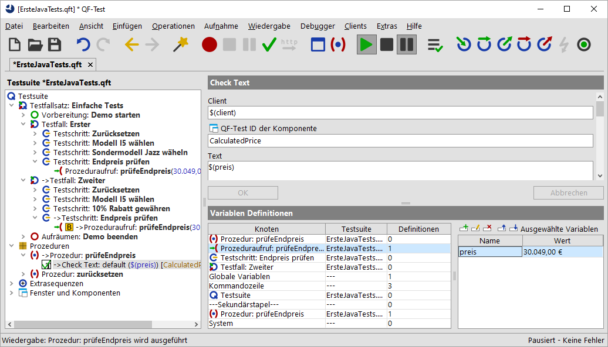
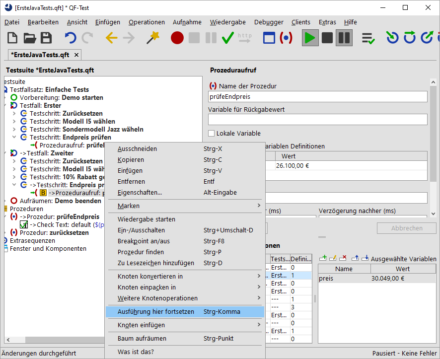

| Version 6.0.3 |
Als nächstes wollen wir die Variablen Definitionen Tabelle unter die Lupe nehmen und herausfinden, wie man sie für Debugging-Zwecke einsetzen kann. Daher belassen Sie bitte den fehlerhaften Wert, der im vorigen Abschnitt im Prozeduraufruf eingefügt wurde.
Dazu soll die Ausführung des Testfalls beim Prozeduraufruf unterbrochen werden um dann mittels Einzelschritten in die Prozedur zu gehen. Dabei werden wir uns ansehen, was in der Variablen Definitionen Tabelle passiert. Anschließend wollen wir direkt aus der Variablen Definitionen Tabelle zum fehlerhaften Prozeduraufruf springen und dort den Parameterwert korrigieren.
|
|  | ||
|
| Abbildung 6.8: Variablen Definitionen Tabelle zeigt den falschen Wert | ||
Wenn Sie mit Einzelschritten in die Prozedur gehen, wird beim ersten eine Zeile für "Prozeduraufruf: prüfeEndpreis" oben in der Tabelle erzeugt und beim zweiten die Zeile "Prozedur: prüfeEndpreis".
Jetzt gibt es die Variable preis auf zwei verschiedenen Ebenen in der Variablen
Definitionen Tabelle: in der Zeile für "Prozeduraufruf: prüfeEndpreis" und in der Zeile
"Prozedur: prüfeEndpreis" auf dem Sekundärstapel, wobei keiner der beiden Variablenwerte
der richtige ist.
In QF-Test können Sie interaktiv die Werte von Variablen in der Variablen Definitionen Tabelle verändern, wenn Sie sich im Debugging-Modus befinden. Sie können sogar neue Variablen hinzufügen oder vorhandene löschen. Damit können Sie arbeiten, solange sich die Variablen auf dem Variablenstapel befinden, in unserem Fall solange wie die Prozedur ausgeführt wird.
Änderungen des aktuellen Variablenwertes in der Variablen Definitionen Tabelle bewirken keine Anpassung des im Prozeduraufrufknoten eingetragenen Parameterwerts. Der Wert muss explizit im Prozeduraufruf geändert werden.
Die schnellste Methode um zum Prozeduraufruf zu gelangen ist ein Doppelklick auf die Prozeduraufrufzeile (zweite Zeile) in der Variablen Definitionen Tabelle. Diese Methode ist besonders hilfreich, wenn Sie umfangreiche Testsuiten debuggen und der Knoten, zu dem Sie springen wollen, nicht im Testsuite-Fenster angezeigt wird. Statt eines Doppelklicks können Sie auch einen Rechtsklick auf die Zeile ausführen und den Menüpunkt »Zu Knoten in Testsuite springen« wählen.
26.100,00 €.
Umgekehrt wird auch der aktuelle Wert in der Variablen Definitionen Tabelle dadurch nicht verändert. Um dies zu erreichen müssen wir den Prozeduraufruf erneut ausführen. Allerdings ist die Testausführung über diesen Punkt bereits hinaus.
Hinweis Daher wollen wir hier eine weitere nützliche Funktion des Debuggers zeigen, mit der man den QF-Test anweisen kann, den nächsten auszuführenden Knoten zu verändern. Dazu selektieren Sie den entsprechenden Knoten und wählen den Menüpunkt »Ausführung hier fortsetzen« verwenden das Tastaturkürzel [Strg-Komma].
Also, um den neu gesetzten Wert auszuprobieren:
|
|  | ||
|
| Abbildung 6.9: Ausführung hier fortsetzen | ||
In der Variablen Definitionen Tabelle sind die zwei obersten Zeilen verschwunden. Der Grund ist, dass Sie die Prozedur verlassen haben (wenn auch "rückwärts") und dass dadurch der Prozeduraufruf mit den daran gebundenen Variablen vom Aufrufstack genommen wurde.
Nun sollte kein Fehler mehr auftauchen.
Hinweis Da die Variablen Definitionen Tabelle äußerst hilfreich ist, wenn Sie nach fehlerhaften Variablenwerten fahnden, wird eine Kopie davon auch unter dem Knoten "Stacktrace" im Protokoll abgespeichert, in dem die Variablenwerte genau zum Zeitpunkt des Fehlers zu sehen sind.
Aktuellen Knoten finden: Manchmal entfernt man sich beim Debuggen ziemlich
weit vom aktuellen Knoten und möchte anschließend wieder zu diesem Knoten zurückfinden. Das geht am einfachsten
indem man in der Toolbar "Aktuellen Knoten finden"  drückt oder den Menüpunkt »Debugger«-»Aktuellen Knoten finden« wählt.
drückt oder den Menüpunkt »Debugger«-»Aktuellen Knoten finden« wählt.
| Letzte Änderung: 6.9.2022 Copyright © 2002-2022 Quality First Software GmbH |